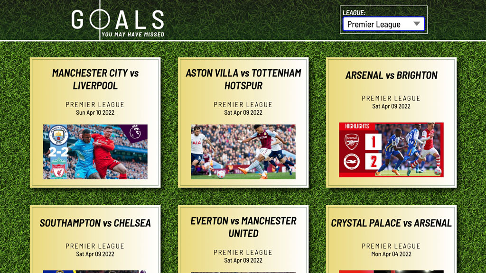
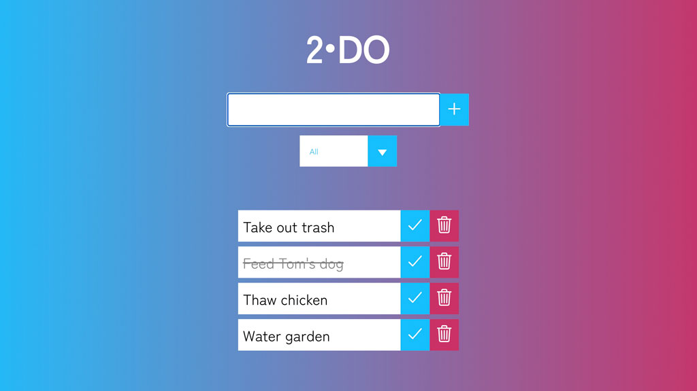

_//RECENT PROJECTS
Goals You May Have Missed
This site allows users to filter recent soccer matches by league and view highlights in a modal video player. Built using the Scorebat API.
Artist Website

This is a personal website I built to highlight my work as a musician and composer through the use of interactive menus and modal videos.
Wedding Website

A personal, multi page website I built for guests of my forthcoming wedding, which incorporates a countdown clock and responsive photo gallery.
Testflix

This app uses the Movie Database to allow users to see titles, ratings and overviews for featured titles, or to search for specific movies.
2•DO
2•DO is a task managment web app built with React that allows users to create and sort a to-do list.
Weather App

This app uses the Open Weather API to provide users with current weather conditions based on their geolocation.